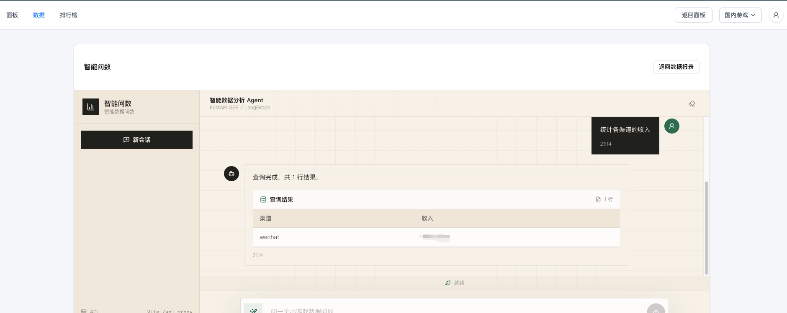
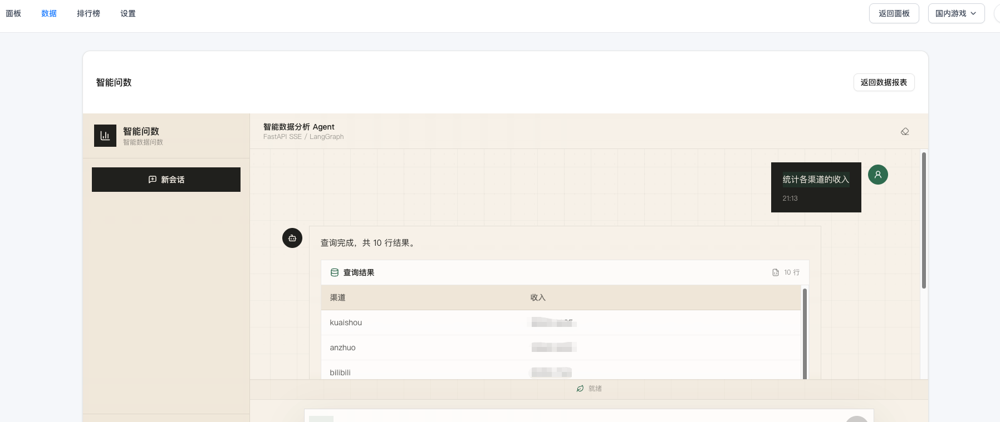

项目一 / 智能问数
智能问数：系统集成与数据权限
基于 shopkeeper-agent 本地移植，问数功能已集成到数据系统，并按用户数据权限控制查询范围。
问数入口已集成到现有系统

相同问题，不同用户权限范围

用户视角 A
返回 1 行 wechat
返回 1 行 wechat
用户视角 B
返回 10 行 多个渠道
返回 10 行 多个渠道
同一问题的结果随当前用户的数据权限范围变化
我做的工作
本地移植开源项目，配置业务 ADS 表及字段语义，集成到系统，并按不同用户的数据权限控制查询结果。